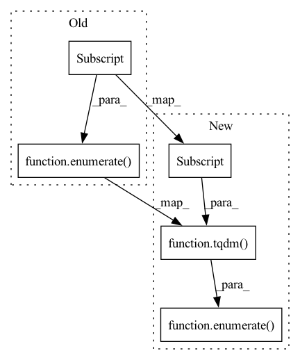

Pattern ID :16365
Before Change
self.model_progress = self.model_progress.fromkeys(self.model_progress, 0)
with torch.no_grad():
for step, batch in enumerate(self.config["loader"]["valid"] ) :
inputs = batch
loss = self.run(inputs)After Change
self.model_progress = self.model_progress.fromkeys(self.model_progress, 0)
with torch.no_grad():
for step, batch in enumerate( tqdm(self.config["loader"]["test"] )) :
inputs = batch
self.metric.generation(self.config, inputs)In pattern: SUPERPATTERN
Frequency: 4
Non-data size: 5
Instances Fragment ID: 55183896
Project Name: bm-k/kobart-summarization-pytorch
Commit Name: 2b5a95cfe7d7f936ccc0fe3e2b64610697bca72c
Time: 2021-09-26
Author: klbm126@gmail.com
File Name: model/KoBART/processor.py
M Class Name: Processor
N Class Name: Processor
M Method Name: test(1)
N Method Name: test(1)
M Parent Class:
N Parent Class:
M File Name: model/KoBART/processor.py
N File Name: model/KoBART/processor.py
M Start Line: 133
M End Line: 140
N Start Line: 137
N End Line: 142
Before Change
def detect(self, **kwargs):
super().detect(**kwargs)
entropy = AverageMeter("entropy", fmt=".4e")
for i, data in enumerate(self.dataset.loader["test"] ) :
_input, _label = self.model.get_data(data)
entropy.update(self.defense.check(_input), n=_label.size(0))
print(f"{i:<10d}{entropy.avg:<20.4f}")After Change
super().detect(**kwargs)
clean_entropy = []
poison_entropy = []
for i, data in enumerate( tqdm(self.dataset.loader["valid"] )) :
_input, _label = self.model.get_data(data)
poison_input = self.attack.add_mark(_input)
clean_entropy.append(self.check(_input)) Fragment ID: 55183890
Project Name: ain-soph/trojanzoo
Commit Name: 6db9e1093a1c57355371acded3524e02f64baa3a
Time: 2020-08-10
Author: ain-soph@live.com
File Name: trojanzoo/defense/backdoor/strip.py
M Class Name: STRIP
N Class Name: STRIP
M Method Name: detect(1)
N Method Name: detect(1)
M Parent Class: Defense_Backdoor
N Parent Class: Defense_Backdoor
M File Name: trojanzoo/defense/backdoor/strip.py
N File Name: trojanzoo/defense/backdoor/strip.py
M Start Line: 17
M End Line: 21
N Start Line: 18
N End Line: 34
Before Change
def generate_all_seq_gifs(data, dataset):
imgs = []
fig = plt.figure()
for i, idx in enumerate(data["info"]["indx"] ) :
seq_length = idx[1] - idx[0]
dataset.max_window_size, dataset.min_window_size = seq_length, seq_length
start = dataset.episode_lookup.index(idx[0])After Change
def generate_all_seq_gifs(data, dataset):
imgs = []
fig = plt.figure()
for i, idx in enumerate( tqdm(data["info"]["indx"] )) :
seq_length = idx[1] - idx[0]
dataset.max_window_size, dataset.min_window_size = seq_length, seq_length
start = dataset.episode_lookup.index(idx[0]) Fragment ID: 55183894
Project Name: mees/calvin
Commit Name: 23a58deaddae672b07bc8d69c855b4800c29eaf9
Time: 2021-10-16
Author: oier.mees@gmail.com
File Name: calvin/utils/visualize_annotations.py
M Class Name: AnonimousClass
N Class Name: AnonimousClass
M Method Name: generate_all_seq_gifs(2)
N Method Name: generate_all_seq_gifs(2)
M Parent Class:
N Parent Class:
M File Name: calvin/utils/visualize_annotations.py
N File Name: calvin/utils/visualize_annotations.py
M Start Line: 50
M End Line: 50
N Start Line: 50
N End Line: 50
Before Change
def generate_all_seq_gifs(data, dataset):
imgs = []
fig = plt.figure()
for i, idx in enumerate(data["info"]["indx"] ) :
seq_length = idx[1] - idx[0]
dataset.max_window_size, dataset.min_window_size = seq_length, seq_length
start = dataset.episode_lookup.index(idx[0])After Change
def generate_all_seq_gifs(data, dataset):
imgs = []
fig = plt.figure()
for i, idx in enumerate( tqdm(data["info"]["indx"] )) :
seq_length = idx[1] - idx[0]
dataset.max_window_size, dataset.min_window_size = seq_length, seq_length
start = dataset.episode_lookup.index(idx[0]) Fragment ID: 55183893
Project Name: mees/calvin
Commit Name: 1db18a355397af6dc5ded2e6eafe225fddcf1640
Time: 2021-10-26
Author: oier.mees@gmail.com
File Name: calvin/utils/visualize_annotations.py
M Class Name: AnonimousClass
N Class Name: AnonimousClass
M Method Name: generate_all_seq_gifs(2)
N Method Name: generate_all_seq_gifs(2)
M Parent Class:
N Parent Class:
M File Name: calvin/utils/visualize_annotations.py
N File Name: calvin/utils/visualize_annotations.py
M Start Line: 50
M End Line: 50
N Start Line: 50
N End Line: 50